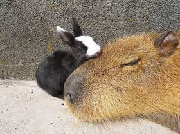

Some words about the author and the project
Hi! My name is Danil, my matriknumber is 206220 and I am first year Informatics student in TalTech.
You're on my pages fully dedicated to such wonderful creatures as capybaras!
I find these animals quite charming and decided to dedicate my assignment to them.
Enjoy your capybara experience here c:
Why are capybaras worth your attention?
 1. First of all, just look at them! Capybaras are just adorable: they have unique funny-shaped face and beautiful firm
fur.
1. First of all, just look at them! Capybaras are just adorable: they have unique funny-shaped face and beautiful firm
fur.
Also, they have permanent poker face and it seems like they don't give a sh*t about anything. Don't know
about you but it definitely vibes with me.
2. They are easy to take care of as they behave like other rodents, so the only difference you will notice between
capybara and a hamster is that they consume more food (a lot more tbh).
3. They are fantastic singers! Capybaras are rather vocal animals, they can sing, purr, bark, whistle. What an object
for a friendly conversation, right?
Capybaras are highly social!

The gregarious Capybara prefers to live among large herds of around 10-20, and is frequently seen mixing
with other animals... or people.
Not only can capybara be an amazing convo partner but it can also be a friend in the toughest times.
Capybaras are different! Find your own.
Every capybara is truly an individual! Capybara has their own personality and sometimes they are quite
extravagant.
For example, here on the left you can see capybara Julio Iglesias. It comes from distant Mexico city. It is
rather progressive animal but it still likes to address and appreciate its Mexican roots and ancestors...
as you can see.